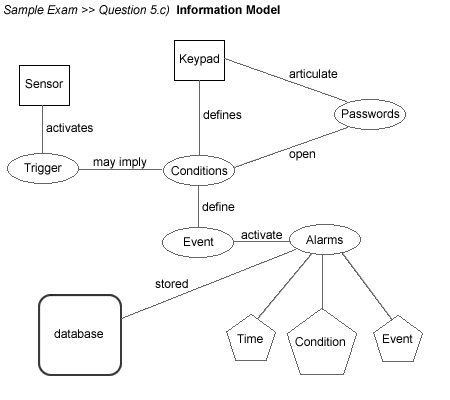

Home >> Sample exam >> Sample exam (solutions)
- Match: (matches presented in corresponding colors)
- Management (vi)
- Requirement (iii)
- Software Engineering (i)
- Risk Neutralizer (ii)
- Waterfall Model (iv)
- Objectivity (v)
- Methods, Processes, Tools (c)
- Mitigation Plan (d)
- Objective AND Testable (b)
- No Backtracking (e)
- Cardinal OR Ordinal (f)
- Planning + Control (a)
- Define:
- Software Engineering -- The study of software and its development, including tools, methods, and processes.
- Capability -- What function software will perform expressed only in subjective terms.
- Software Life Cycle -- The description of the existence of software from conception to death.
- Task -- A defined unit of work with attributes of who, what, etc.
- Assume that a Waterfall Model is understood. Describe a Throwaway Prototype Model and why it would work better.
Waterfall Model diagram Throwaway Prototype Model diagram There is a lack of knowledge and/or understanding that stops Requirements from being complete. Therefore prototypes are created to inform the process but desposed of when the knowledge is gained.
- Present a Planning Package for the development of an 8-year-old girl's video game. Describe the deliverables and argue why this package is complete.
- Project Plan -- will control development with project reviews and audits.
- Risk Plan -- will provide insurance to the project plan by mitigating the most likely risks.
- Configuration Plan -- will bring efficiency to the development team.
- Quality Assurance Plan -- will maintain attractiveness, suitability, and learnability for the 8-year-old user of the target marketplace. Product reliability will also be developed.
- An alarm system needs software. At present it has two components. First a base station with network software and a simple database. Secondly, there are sensor boxes with network software, motion detection, CO2 detection, heat detection, and smoke detection. All units have at least 10 megabytes of RAM and a 15-button key pad and audible alarms.
- Describe an implementation arch
- Describe a list of capabilities (5 is enough)
- Present an Information Model
- Propose 6 Requirements
- Client/Server as Master/Slave
-
Fire, Heat, Smoke Detection
Unlawful Entry Detection
CO2, Smoke Detection
Password Set
Log of Activity -
Information Model diagram:

-
Alarms shall be stored in database.
Keypad updates passwords.
Alarm will sound when CO2 level exceeds XXXX OR Smoke level exceeds YYYY.
Alarm will sound when CO2 level exceeds mmmm AND Smoke level exceeds nnnn AND Temp level exceeds oooo.